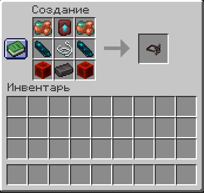
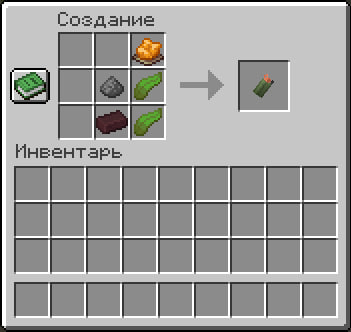
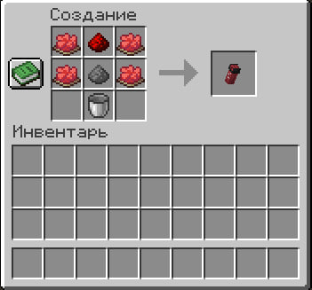
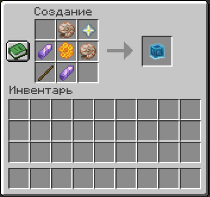
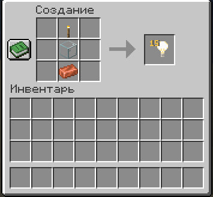
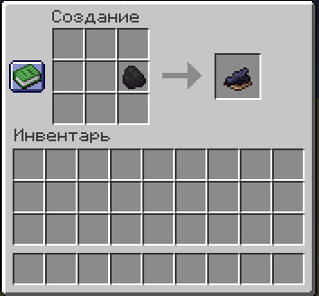

Кастомные крафты
Список всех уникальных рецептов крафтов, доступных игрокам на сервере ShizCraft.
Предмет Маска
Специальный головной убор, который позволяет скрыть личность персонажа во время проведения секретных операций или защиты своей территории.
- Скрытие никнейма: Полностью скрывает ваш никнейм в чате, локальном общении, а также в системных сообщениях о смерти или убийстве (будет писаться Неизвестный).
- Защита от осмотра: Другие игроки не смогут осмотреть ваш инвентарь или профиль при клике ПКМ.
- Время действия: Маска активна в течение 10 минут нахождения на голове, после чего приходит в негодность и ломается.

Предмет Дымовая шашка
Тактическое средство для создания визуальных помех, отступления или дезориентации соперника.
- ЛКМ (Дальний бросок): Бросает дымовую шашку вперед.
- ПКМ (Под себя): Мгновенно активирует шашку прямо под ногами игрока.
- Эффект дымовой завесы: Создает гигантское облако густых частиц дыма, которое держится 30 секунд.
- Эффекты на противников: Ослепляет и замедляет всех игроков в радиусе 6 блоков (на бросившего игрока эффекты не действуют).

Предмет Перцовый баллончик
Надежное средство самообороны ближнего боя для временной нейтрализации агрессоров.
- ПКМ (Активация): Распыляет едкий газ перед собой в радиусе 3.5 блоков.
- Стан: Все цели перед вами полностью лишаются возможности двигаться.
- Дезориентация: Противники временно ослепляют и слабеют, что лишает их возможности дать сдачи.
- Запас прочности: Баллончик рассчитан на 5 использований, после чего ломается.

Предмет Куб отладки
Строительный инструмент, воссоздающий возможности оригинальной палочки отладки Minecraft для детальной настройки блоков.
- Разблокировка сотами: Чтобы начать редактирование блока, сначала кликните по нему пчелиными сотами (ПКМ).
- ЛКМ (Выбор свойства): Переключает доступные параметры блока (направление, оси, открытость, полублок и др.).
- ПКМ (Изменение значения): Меняет выбранный параметр блока на следующий.

Альтернатива Невидимый свет
Декоративный источник освещения, позволяющий подсвечивать постройки без загромождения пространства факелами или лампами.
- Создание: Рецепт выкладывается строго по вертикали по центру верстака (Факел -> Стекло -> Медный слиток). При крафте получается 15 блоков света.
- Регулировка яркости: Зажмите клавишу Shift и прокручивайте колесико мыши, удерживая блок в руке, чтобы изменить уровень излучаемого света (от 0 до 15).

Альтернатива Черный краситель
Удобный способ получения черного красителя без необходимости поиска чернильных мешков спрутов.
- Рецепт: Поместите 1 единицу обычного или древесного угля в любое место сетки крафта в инвентаре или верстаке.
- Результат: Вы мгновенно получите 1 единицу черного красителя.
